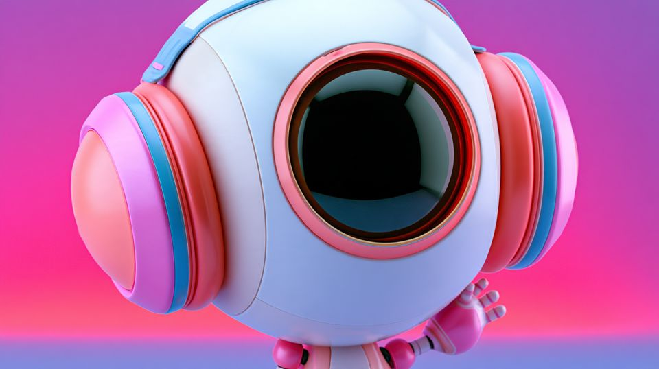
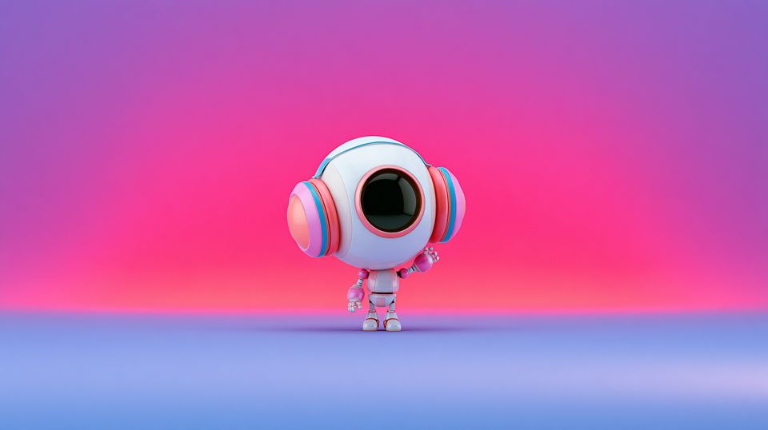
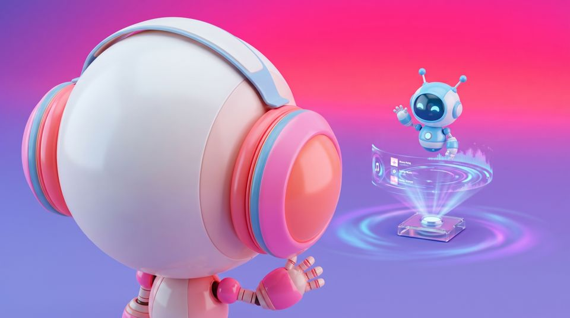
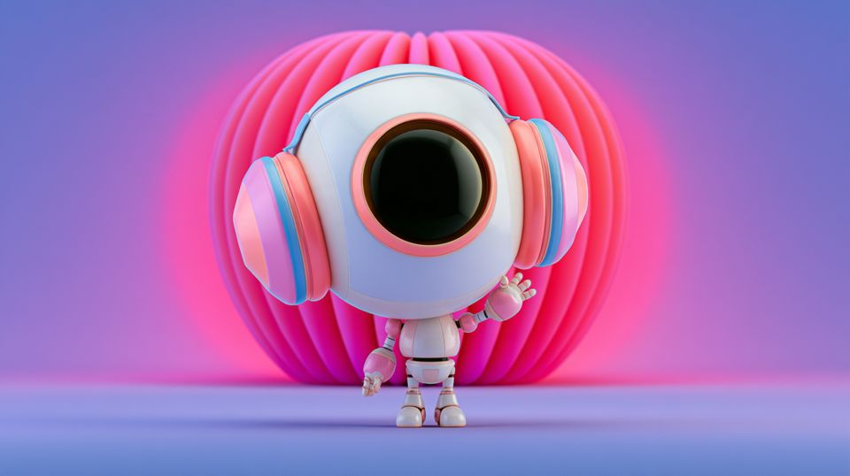

Library / Shot Sizes and Angles
Shot Sizes and Angles
18 keywords in this category, each one tested and explained in plain language.
Pick keywords as you browse, then press Copy for AI and paste into ChatGPT, Claude or any AI. Copy keywords gives a plain list for Midjourney or Seedance.


Establishing Shot
An opening view that tells the audience where and when they are before anything happens.

Extreme Close-Up
A single detail fills everything: an eye, a trembling hand, a turning key.

Extreme Wide Shot
The subject is tiny in a vast environment; landscape as the loudest voice.



Over-the-Shoulder
Framed past one character's shoulder onto another; conversation with built-in geography.

Wide Shot
Full body visible with generous surroundings; the scene's geography stays honest.